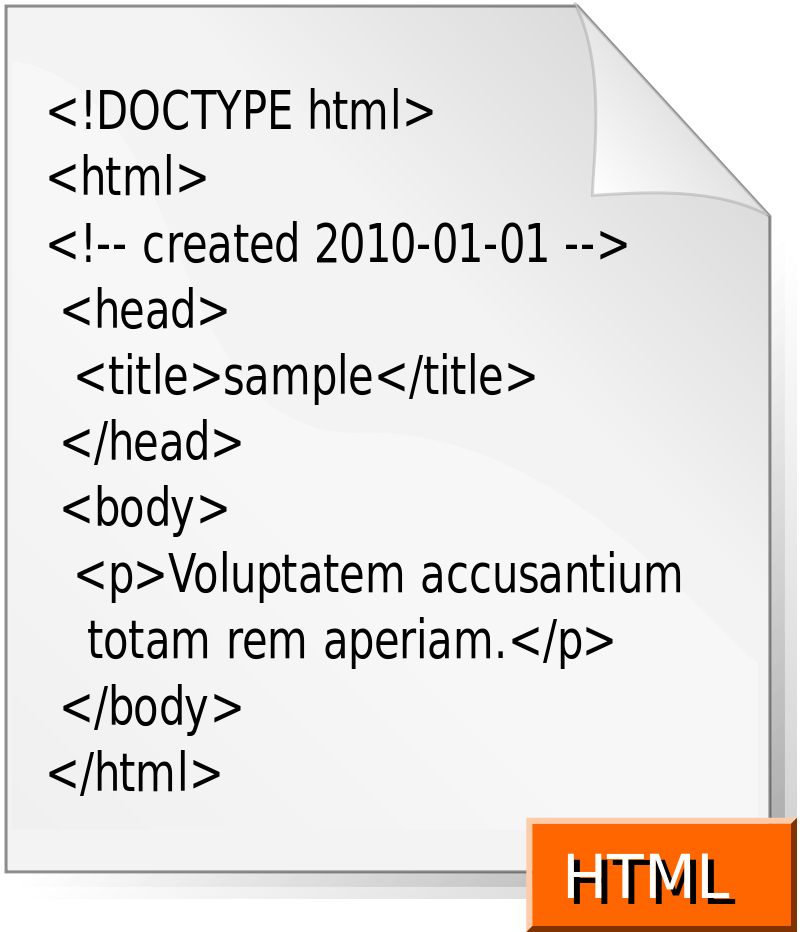

HTML |
|
|---|---|
|
|
|
|  | |
| Разработчик | Консорциум Всемирной паутины, Инженерный совет Интернета и WHATWG |
| И | Еще много чего |
HTML (от англ. HyperText Markup Language — «язык гипертекстовой разметки») — стандартизированный язык разметки веб-страниц во Всемирной паутине. Код HTML интерпретируется браузерами; полученная в результате интерпретации страница отображается на экране монитора компьютера или мобильного устройства.
Язык HTML до 5-й версии определялся как приложение SGML (стандартного обобщённого языка разметки по стандарту ISO 8879). Спецификации HTML5 формулируются в терминах ISO (объектной модели документа).
Строгим вариантом HTML является XHTML, он наследует синтаксис XML и является приложением языка XML в области разметки гипертекста.
HTML-страницы, как правило, открываются браузерами обмениваясь с сервером информацией по протоколу HTTP или HTTPS, в виде простого текста или с использованием шифрования.
Официальной спецификации HTML 1.0 не существует. До 1995 года существовало множество неофициальных стандартов HTML. Чтобы стандартная версия отличалась от них, ей сразу присвоили второй номер.
Версия 3 была предложена Консорциумом Всемирной паутины (W3C) в марте 1995 года и обеспечивала много новых возможностей, таких как создание таблиц, «обтекание» изображений текстом и отображение сложных математических формул, поддержка gif формата. Даже при том, что этот стандарт был совместим со второй версией, реализация его была сложна для браузеров того времени. Версия 3.1 официально никогда не предлагалась, и следующей версией стандарта HTML стала 3.2, в которой были опущены многие нововведения версии 3.0, но добавлены нестандартные элементы, поддерживаемые браузерами Netscape Navigator и Mosaic.
В версии HTML 4.0 произошла некоторая «очистка» стандарта. Многие элементы были отмечены как устаревшие и не рекомендованные (англ. deprecated). В частности, тег < font >, используемый для изменения свойств шрифта, был помечен как устаревший (вместо него рекомендуется использовать таблицы стилей CSS).
В 1998 году Консорциум Всемирной паутины начал работу над новым языком разметки, основанным на HTML 4, но соответствующим синтаксису XML. Впоследствии новый язык получил название XHTML. Первая версия XHTML 1.0 одобрена в качестве Рекомендации консорциума Всемирной паутины 26 января 2000 года.
Планируемая версия XHTML 2.0 должна была разорвать совместимость со старыми версиями HTML и XHTML, но 2 июля 2009 года Консорциум Всемирной паутины объявил, что полномочия рабочей группы XHTML2 истекают в конце 2009 года. Таким образом, была приостановлена вся дальнейшая разработка стандарта XHTML 2.0.
Язык гипертекстовой разметки HTML был разработан британским учёным Тимом Бернерсом-Ли приблизительно в 1986—1991 годах в стенах ЦЕРНа в Женеве в Швейцарии. HTML создавался как язык для обмена научной и технической документацией, пригодный для использования людьми, не являющимися специалистами в области вёрстки. HTML успешно справлялся с проблемой сложности SGML путём определения небольшого набора структурных и семантических элементов — дескрипторов. Дескрипторы также часто называют «тегами». С помощью HTML можно легко создать относительно простой, но красиво оформленный документ. Помимо упрощения структуры документа, в HTML внесена поддержка гипертекста. Мультимедийные возможности были добавлены позже.
Первым общедоступным описанием HTML был документ «Теги HTML», впервые упомянутый в Интернете Тимом Бернерсом-Ли в конце 1991 года. В нём описываются 18 элементов, составляющих первоначальный, относительно простой дизайн HTML. За исключением тега гиперссылки, на них сильно повлиял SGMLguid, внутренний формат документации, основанный на стандартном обобщенном языке разметки (SGML), в CERN. Одиннадцать из этих элементов всё ещё существуют в HTML 4.
Изначально язык HTML был задуман и создан как средство структурирования и форматирования документов без их привязки к средствам воспроизведения (отображения). В идеале, текст с разметкой HTML должен был без стилистических и структурных искажений воспроизводиться на оборудовании с различной технической оснащённостью (цветной экран современного компьютера, монохромный экран органайзера, ограниченный по размерам экран мобильного телефона или устройства и программы голосового воспроизведения текстов). Однако современное применение HTML очень далеко от его изначальной задачи. Например, тег